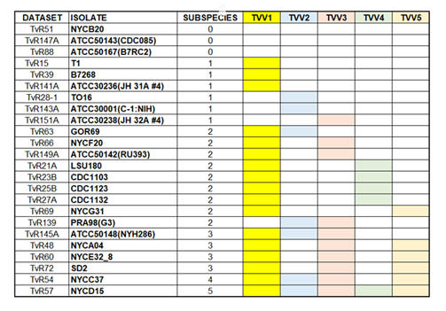
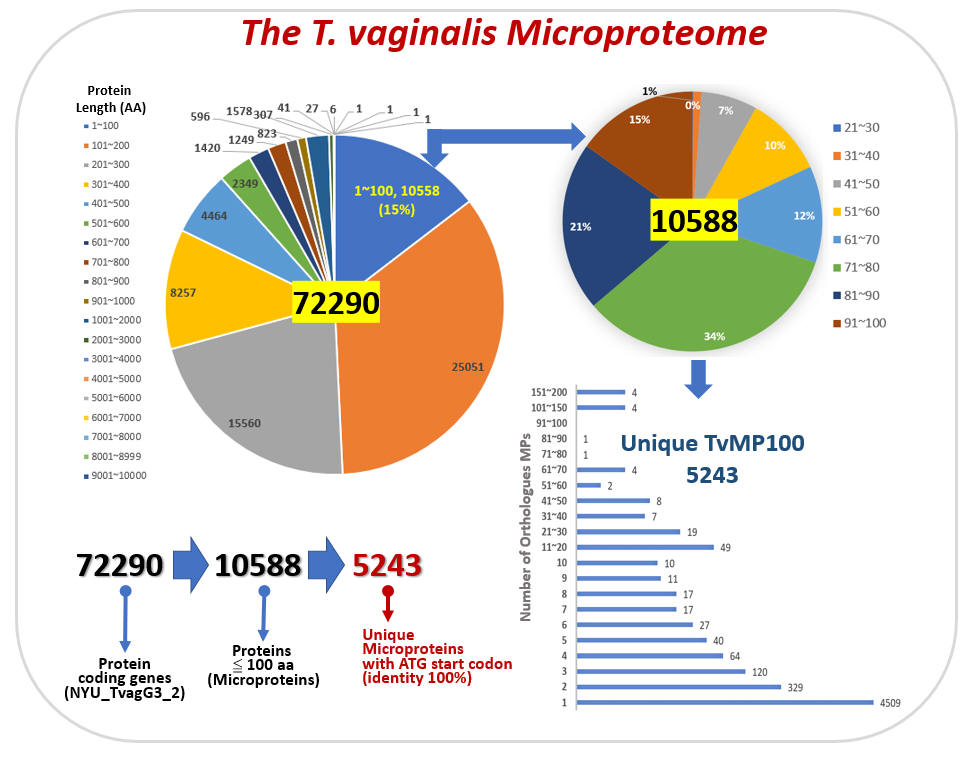
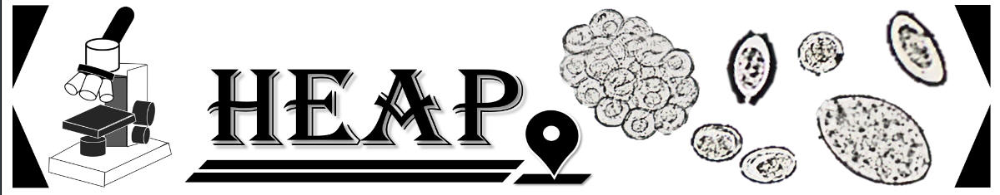

| Trichomonas vaginalis | |
 |
T. vaginalis is the causative agent of human trichomoniasis. Infection is acquired primarily through direct sexual contact although neonatal infection has also been reported. The trophozoites colonize and parasites in vagina or prostate of infected hosts. As the parasite multiplies, it attaches to the squamous epithelium in the genital tract. Infection in males is usually asymptomatic while the spectrum of clinical trichomoniasis in women ranges from the chronic carrier to acute inflammation of the vagina. Recent reports suggested that trichomoniasis is also associated with adverse pregnancy outcomes, increased susceptibility to HIV and the risk of cervical neoplasia. The annual incidence of human trichomoniasis is more than 170 million cases worldwide. Sullivan SA, Orosco JC, Callejas-Hernández F, Blow F, Lee HY, Ranallo-Benavidez T, Peters A, Raidal S, Girard YA, Johnson CK, Rogers K, Gerhold R, Mangelson H, Liachko I, Srivastava H, Chandler C, Berenberg D, Bonneau RA, Huang PJ, Yeh YM, Lee CC, Hsuan Liu, Tang P, Chiu CH, Chen TW, Schatz MC, Carlton JM (2025) Comparative genomics of the sexually transmitted parasite Trichomonas vaginalis reveals relaxed and convergent evolution and genes involved in spillover from birds to humans. Nature Communications. 16:6487-6502 |
| 科學大解碼: 陰道鞭毛蟲 [video] | Wikipedia on T. vaginalis | |
|
CDC Fact sheet on Trichomonas infection
| CDC STD information: Trichomoniasis |
|
| 19th Biennial Meeting of the
International Society for Sexually Transmitted Diseases Research 1. Trichomoniasis: Why is It the Neglected STD? by M. Hobbs 2. A Trich-y parasite: genomics, population genetics and evolution of Trichomonas vaginalis by Jane Carlton |
|
| Modulation of exosomal cargo by Trichomonas vaginalis endosymbionts | |
|
Charles University in Prague
teamed up with Chang Gung University to study
the role of protozoan exosome on virus transmission supported by the
MOST-GACR Joint Research Cooperation Funding. Trichomonas
vaginalis is the causative agent of trichomoniasis, the most
common non-viral sexually transmitted infection (STI) with a
worldwide incidence of over 220 million cases. Trichomonads often
harbor viral (TVV) or Mycoplasma hominis endosymbionts that can
amplify the severity of infection. However, the mechanisms of
communication between endosymbiont, parasite, and host cell are
unknown. This cooperation project is based on mutual sharing of
data, personnel, and complementary expertise between two leading
groups that provide a synergic effect towards investigation of a
common aim: to elucidate how presence of endosymbionts (TVV and M.
hominis) modify exosomal cargo of T. vaginalis and may
stimulate the parasite virulence. Ong SC, Luo HW, Cheng WH, Ku FM, Tsai CY, Huang PJ, Lee CC, Yeh YM, Lin R, Chiu CH, Tang P* (2024) The core exosome proteome of Trichomonas vaginalis. J Microbiol Immunol Infect 57(22):246-256 |
|
| MOST GASE NEWS | |
| Chang Gung University and Charles University in Prague scientists teamed up to investigate the role of protozoan exosomes on virus transmission | |
| Single Cell Sequencing of Trichomonas vaginalis virus (TVV) | |
|
Trichomonas vaginalis is a flagellated parasitic protozoan of the human genitourinary tract. Previous studies showed that a double-stranded ribonucleic acid (dsRNA) virus, Trichomonasvirus (TVV), belongs to the Totiviridae family and can infect T. vaginalis. The TVV family has five subspecies; TVV1~TVV5. Accumulating reports demonstrated that a single T. vaginalis isolate could harbor up to five TVV subspecies. By mining the next-generation ribonucleic acid sequencing (RNA-seq) datasets, we elucidated the distribution of five TVV subspecies in twenty-four T. vaginalis isolates. Our results showed that only three isolates are TVV-free, while fifteen isolates are co-infected by more than one TVV subspecies. To clarify whether multiple TVV subspecies infected all the cells in the same isolate, we will use single-cell RNA sequencing technology to estimate the distribution of TVV subspecies in T. vaginalis isolates. In addition, we will isolated colonies derived from the parent isolate that contains ONLY specifc TVV subspecies or co-infected by combination of TVV2 subspecies. These sub-isolates derived from the same parent isolate and have identical genetic backgrounds except with or without TVV. They are potent tools for future studies.to pinpoint individual or co-infected TVV subspecies' role in the pathogenicity and drug susceptibility of T. vaginalis Ong SC, Cheng WH, Ku FM, Tsai CY, Huang PJ, Lee CC, Yeh YM, Rada P, Hrdý I, Narayanasamy RK, Smutna T, Lin R. Luo HW, Chiu CH. Tachezy J*. Tang P* (2022) Identification of Endosymbiotic Virus in Small Extracellular Vesicles Derived from Trichomonas vaginalis. Genes (13)531. Luo HW, Ong SW, Syu JW, Tsai CY, Huang PJ, Lee CC, Yeh YM, Lin R, Chiu CH, Tang P* (2026) Viral load dependent cellular heterogeneity in Trichomonas vaginalis at single cell level. iScience 29:114260-114274. 
|
|
| The role of microproteins on the regulation of iron stress response in Trichomonas vaginalis | |
|
Microprotein (MP) is defined as a
protein composed of less than 100 amino acids. Accumulated
experimental data showed that microproteins play important
regulatory roles in various biological processes, including tumor
progression, stress response, and signaling transduction. However,
microprotein has been under-studied because classical genome
annotation methods do not consider open reading frames (ORF) less
than 100 amino acids as putative genes. Recent developments in
new-generation sequencing techniques allowed us to identify novel
MPs and obtain a more comprehensive view of these novel MP's
expression profiles. Up to date, MP research had not been explored
in any protozoan. This three-year research proposal will use
Trichomonas vaginals as a model system to identify and
characterize the putative functional roles of MP under iron stress.
T. vaginalis is the causing agent of the most common sexually
transmitted infection (STI) of nonviral origin in humans
trichomoniasis. Iron is an essential element for the survival of
T. vaginalis, which sustains hydrogenosomal quality, energy
metabolism, and redox homeostasis.
 |
|
| Remote Parasitology specimen identification & education system | |
|
Millions of people throughout the world suffer from parasite infections. Traditionally, technicians use manual eye inspection of microscopic specimens to perform a parasite examination. However, manual operations have limitations that hinder the ability to obtain precise egg counts and cause inefficient identification of infected parasites on co-infections. The technician requirements for handling a large number of microscopic examinations in countries that have limited medical resources are substantial. We developed the helminth egg analysis platform (HEAP) as a user-friendly microscopic helminth eggs identification and quantification platform to assist medical technicians during parasite infection examination. (http://heap.cgu.edu.tw)
 Lee CC, Huang PJ, Yeh YM, Li PH, Chiu CH, Cheng WH, Tang P*. (2022) Helminth egg analysis platform (HEAP): An opened platform for microscopic helminth egg identification and quantification based on the integration of deep learning architectures. J Microbiol Immunol Infect. (55)395-404. |
|